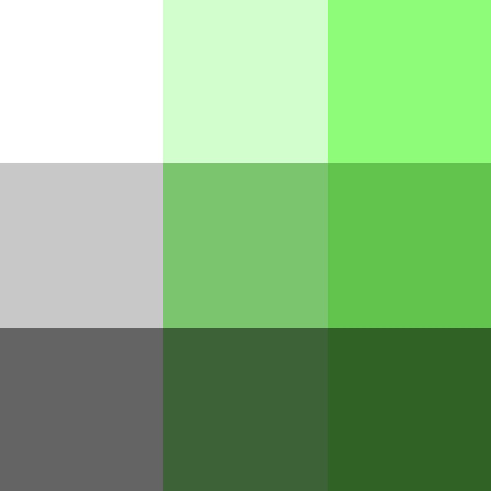
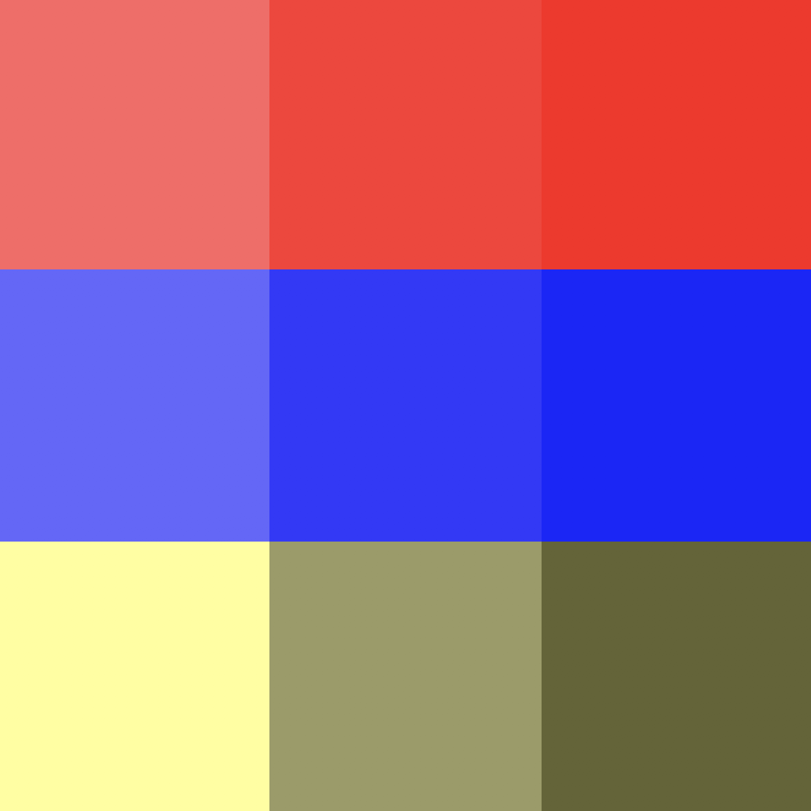
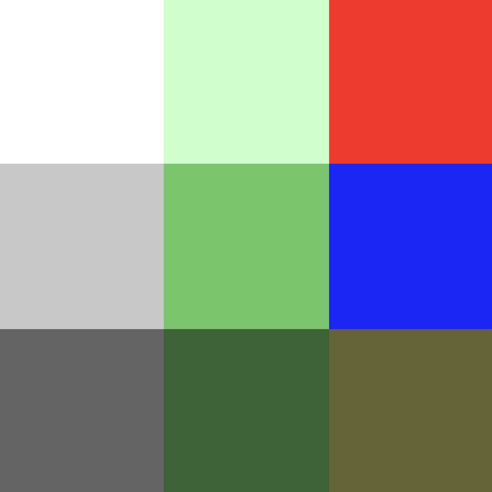
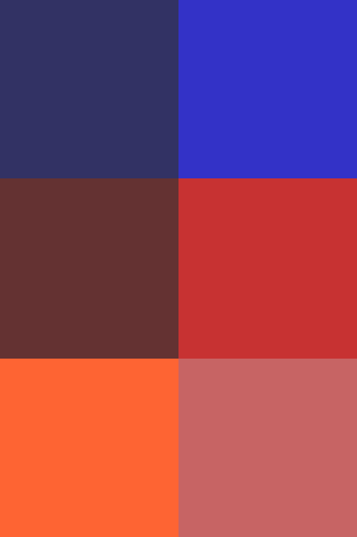
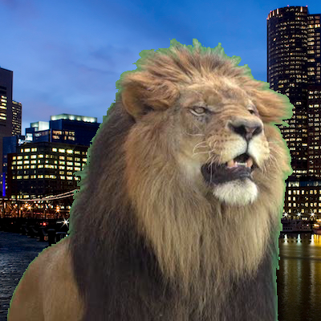
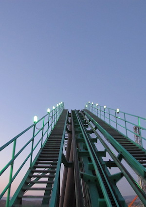
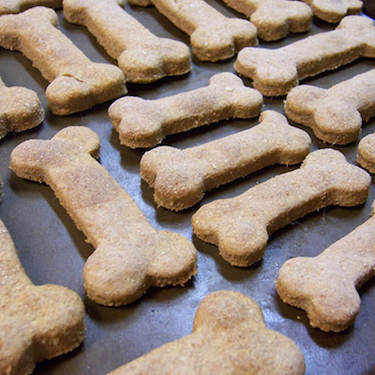
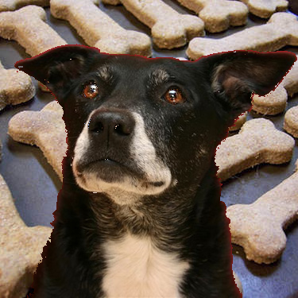

A number of popular movies (including The Avengers, The Hobbit, Star Wars, etc) use greenscreens (or blue screens) during the process of film-making. Perhaps you’ve heard the term used before. But what is a greenscreen, and why is it needed when making movies? The video embedded below gives an overview of how green/blue screens are used in the film-making process.
The idea with a greenscreen is the following. At times in an image or a movie, the photographers or film-makers want to use a background scene that is different from the on-set location. However, in many cases, it is unrealistic to actually shoot a film in such a location. For example: Perhaps a film-maker wants to shoot a scene on the moon in a film. Clearly, it is unrealistic to travel all the way to the moon to shoot the scene there, and it also might be out-of-budget to build a large and detailed moon set to film on. Instead of doing either of those things, the film-makers can shoot footage of the actors and foreground objects with a green or blue background. Later, during the editing process, images or video footage of space and the moon can replace the solid-colored background image.
Another example would be the Mustafar lightsaber scene from Star Wars episode III. If you’ve not seen it before, watch some of the clip embedded below.
It would be rather unrealistic to build a giant set on top of a volcano just to shoot this scene. Instead, the filmmakers filmed the actors fighting on a set, but with greenscreens in the background. Then, they added in other footage of lava and volcanic activity during the editing process.
In this PA, you’ll be writing a program that can combine a still image with a green, blue, or red screen, with a background (or fill) image.
The program that you write will not operate in video footage. Instead, it will operate on PPM images. By this time, hopefully you are fimiliar with the PPM image format by now. The program that you write will need to open PPM files and determine the image’s width, height, and RGB pixel values.
If you need a refresher on the file format, read slides from class.
You can assume the following about the PPM files your program will have to process:
P3)255)This program will take 5 total input values.
r, g, or b.
After getting this input value, the program should ensure that it is one of these three options.
If not, the program should print an error message and exit.Below is an example of what the prompts for these input values should look like:
Enter color channel
g
Enter color channel difference
2.0
Enter greenscreen image file name
lion.ppm
Enter fill image file name
city.ppm
Enter output file name
lion_in_city.ppm
Once your program has all of the input values that they have been validated, then you should move on to the progress of running the greenscreen algorithm.
Before describing the algorithm, let’s define a few entities. We will refer to the image with the red, green, or blue screen image A. Let’s call the background/fill image image B. Also, recall the channel difference float. for this description, lets shorten it to just CD (for Channel Difference).
You should use nested loops (either for loop or while loops) to iterate through the indexes of the rows and columns of the image. For each pixel, the program should determine if the pixel in the new image should be the one from image A or B. In order to do so, it should compare the value of the color of the screen (red, green, or blue) to the other two. If the channel of the screen is greater than CD times more bright than the other two channels at that particular pixel, then the pixel for the new image should be taken from image B. Otherwise, it should be taken from image A.
For example, let’s say that you are working with a green(screen) background, and the CD value is 2.0. Now, say that you are faced with the below single pixel value from image A.
100 255 150
In this case the green value (255) is more than 2.0 times as bright as the red value (100 * 2.0 = 200.0). However, it is not 2.0 times as bright as the blue value (150 * 2.0 = 300.0). In this case, the pixel from image A should be used.
Now, let’s say that you are working with a red(screen) background, and the CD value is 3.5, and you are evaluating this pixel from image A:
230 40 50
In this case the red value (230) is more than 3.5 times as bright as the green value (140 * 3.5 = 140.0). It is also more than 3.5 times times as bright as the blue value (50 * 3.5 = 175.0). In this case, the pixel from image B should be used.
Rather than beginning the program from scratch, start from the provided starter code, linked below. This code contains a function that can read in the RGB data from a PPM file.
Below I show examples of running this program with a red screen, green screen, and blue screen. For each of the examples the displayed images will be either JPG or PNG. However, you should download the ppm versions to run your program with. The links to the PPMs are provided.
Test cases will not be provided on differ, at least initially.
The below run of greenscreen.py with the input images linked below, will produce the output shown at the end of the table.
Enter color channel
g
Enter color channel difference
2.0
Enter greenscreen image file name
small_1_a.ppm
Enter fill image file name
small_1_b.ppm
Enter output file name
result_1.ppm
Output file written. Exiting.
| small_1_a.ppm | small_1_b.ppm | result |
|  |  |  |
The below run of greenscreen.py with the input images linked below, will produce the output shown at the end of the table.
Enter color channel
r
Enter color channel difference
1.5
Enter greenscreen image file name
a.ppm
Enter fill image file name
b.ppm
Enter output file name
result_2.ppm
Output file written. Exiting.
| a.ppm | b.ppm | result |
|  | |
|
The below run of greenscreen.py with the input images linked below, will produce the output shown at the end of the table.
Enter color channel
g
Enter color channel difference
1.5
Enter greenscreen image file name
lion.ppm
Enter fill image file name
city.ppm
Enter output file name
lion_in_city.ppm
Output file written. Exiting.
| lion.ppm | city.ppm | result |
 |
 |
The below run of greenscreen.py with the input images linked below, will produce the output shown at the end of the table.
Enter color channel
b
Enter color channel difference
1.7
Enter greenscreen image file name
dog.ppm
Enter fill image file name
rc.ppm
Enter output file name
dog_on_rc.ppm
Output file written. Exiting.
| dog.ppm | rc.ppm | result |
 |
 |
The below run of greenscreen.py with the input images linked below, will produce the output shown at the end of the table.
Enter color channel
r
Enter color channel difference
4.7
Enter greenscreen image file name
dog2.ppm
Enter fill image file name
bones.ppm
Enter output file name
dog_with_bones.ppm
Output file written. Exiting.
| dog2.ppm | bones.ppm | result |
 |
 |  |
This PA is due on Tuesday, Dec 4, 2018. You may use a late day if you have one available still. Turn in the program via Gradescope.